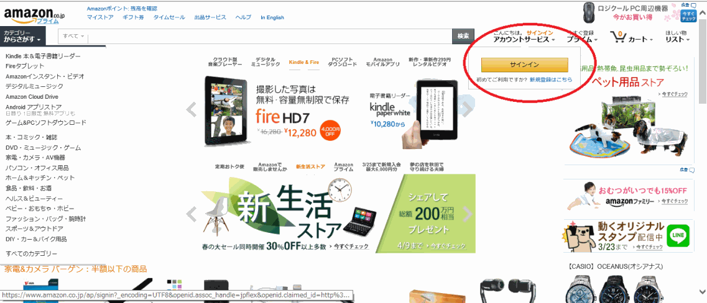
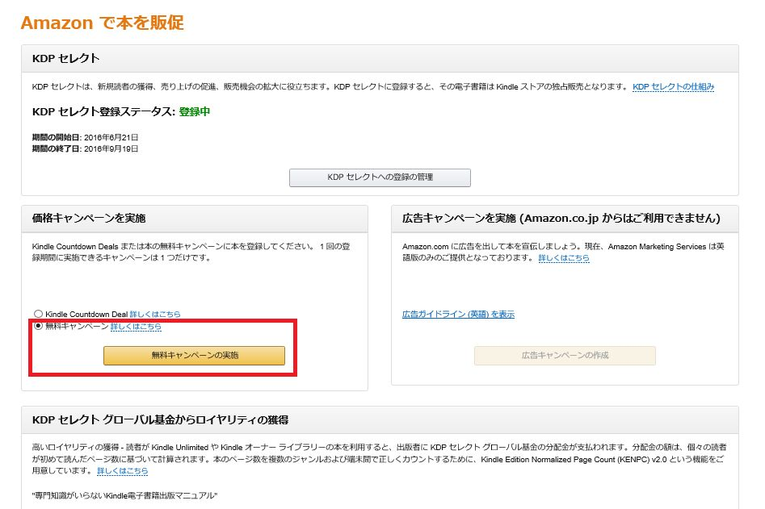
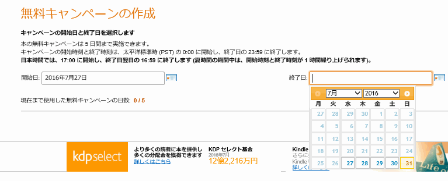

| Wordで作るKindle電子書籍出版マニュアル2018年度版 | |
| 深澤四朗 | |
| e-book publishing workshop (2016) | |
はじめに
タブレット端末やスマートフォンの普及により、電子書籍を出版したいと考えている人がとても増えています。それに伴い電子書籍の作成に関する本も沢山、出版されています。どの本もそれぞれ特徴があり参考になります。また電子書籍を作成するツールも急速に充実しハードルは低くなっています。本当に誰でも本を出版できる時代になったと実感しています。
私は電子書籍出版工房というところで電子書籍出版のお手伝いをしている者です。お客様には定年退職者や主婦など「人生の節目にあたり何かを残しておきたい」という方や「仕事で得た経験やノウハウを大勢の人に伝えたい」というビジネスマンの方が多くいらっしゃいます。
確かに電子書籍を作成するハードルは低くなりましたが、パソコンにあまり詳しくない方は少し難しい部分もあるかもしれません。
本書の特徴は３つあります。
①使い慣れたワードとパワーポイントなど一般的なソフトのみを使い作成します。
②電子書籍の作り方やAmazonKDPの登録などのパソコン操作について、ほぼ全て画像を入れており誰にでも本を作成、出版できるようにしています。
③2018年8月時点の最新情報で解説しています。Wordは従来では試験的対応という扱いでしたが現在では試験的対応という言葉は取り払われています。
DOC/DOCXファイルでの登録や縦書き、ルビ振りの方法も解説しています。
また現在では米国の税金を回避するEINやTINの取得も不要になっています。
私も電子書籍出版の代行をするにあたり勉強のため数冊の本と写真集を出したことがあます。仕事を忘れる程、面白く没頭してしまいました。そして、わずかな部数であっても知らない方に購入していただいた喜びはとても大きなものがありました。是非、電子書籍の世界に足を踏み入れて下さい。素晴らしい世界が待っています。
本書が皆様の電子書籍出版の参考になれば幸いです。
第１章 電子書籍の基礎知識
この章では電子書籍の価格設定やロイヤリティ、日米の税金、データの規格など出版前に知っておくべきことをAmazonKDPと楽天KWL（Kobo）と比較しながら解説します。
Kindleダイレクト・パブリッシング（KDP)とは
AmazonのKindleストアから本を出版し販売するためのサービスです。出版にかかるコストは無料で、本はKindle端末だけではなくiPAD、iPhone、Android端末などでも読むことができます。小説や専門書だけではなく写真集・コミック本も出版できます。
価格設定とロイヤリティ
価格は99円から20,000円まで設定できます。KDPセレクトに登録して且つ価格を250円から1,250円の間に設定した場合に70％のロイヤリティが選択できます。それ以外は価格を99円から20,000円の間で設定しロイヤリティは35％になります。また無料販売はキャンペーン以外では設定できません。
KDPセレクトとは
販売促進を目的としたKDPのオプションです。Kindleオーナーライブラリーに登録され、Amazon プライム会員は1ヶ月に 1 冊好きな本を選んで読むことができます。また無料販売などキャンペンツールが選択できます。メリットは70％のロイヤリティを設定できることです。デメリットは90日間Amazonの独占販売となり、その間はAmazon以外のストアから販売ができません。またファイル容量１MBにつき1円の配信コストが差し引かれます。90日以降は自動更新になりますが取り消すことも可能です。その場合は35％のロイヤリティが適用されます。
つまり AmazonKDPと他のストアと併売する場合はKDPセレクトに登録できないので70％のロイヤリティオプションは選択できなくなります。
※楽天KWL(Kobo)とAmazonKDPの対応表です。参考にして下さい。
日米の税金
日本語のサイト（Amazon.co.jp）でも世界中に販売できます。以前は日本で出版する場合でも米国のAmazon社が販売するのでIRSで納税者番号を取得しないと米国で30％源泉徴収されていました。しかし 現在では日本国内で販売する場合は米国の源泉徴収は無くなりましたのでEIN(Employer Identification Number)やTIN(Taxpayer Identification Number）を取得する必要はありません。 1度だけの手続きとはいえ結構面倒でしたので、これだけでも出版のハードルは低くなりました。
国内の源泉徴収についてはロイヤリティから差し引かれませんので確定申告になります。会社員であれば雑所得20万円以下は申告不要ですので雑所得の額により確定申告の有無を決めたら良いと思います。
KDPの規格
電子書籍サイトにアップロードする原稿のファイル形式やサイズについて解説します。
本文データの規格
・原稿のファイル形式はWord,HTML,MOBI,epub,RTF,TXT,PDF（日本語サポート無し）,KFP
・原稿のサイズは650MB以下
・原稿で使えるグラフィクの形式はGIF,PNG,BMP,JPG
・１つの画像のサイズは5MB以下
表紙（商品画像）の規格
・データ形式はJPGまたはTIF
・推奨される縦横比は1：1.6
・短辺は625ピクセル以上、長辺は1,000ピクセル以上
・画像の品質を最高にするには、長辺は2,560ピクセル
・つまり1,600×2,560ピクセル（きりの良い1600×2400ピクセルでも可）
・データのサイズは50MB未満
第２章 本文データの作成
この章ではワードを使った電子書籍データの作り方を解説します。目次以外は殆ど日常的に使っている機能です。また番外編として縦書きルビ振りについても解説します。 ワードのバージョンによりツールバーの表示が異なりますが適宜、読みかえて下さい。
電子書籍の構成と必要な機能
電子書籍の構成は概ねこのようになります。
・商品画像：Kindleストアに掲載される画像です。第３章で解説します。
・表紙：タイトルと著者名です。商品画像があるので任意です。
・目次：ハイパーリンク付きの目次です。第２章で解説します。
・本文：「はじめに」、「章」、「おわりに」などの本文です。「はじめに」は目次の前に入れる場合もありますが、どちらでも良いと思います。
・奥付：タイトル、著者名、出版日、改訂履歴などです。任意です。
電子書籍作成で知っておくべき機能は次の４つです。
・画像の挿入
・ハイパーリンクの挿入
・目次の作成
・文書の保存
画像の挿入
「挿入」＞「図」をクリックして目的の画像を選択します。コピー＆ペーストでは貼り付けないで下さい。意図しない位置に挿入されることがあります。
表もWordの表で作成できますが、画像として貼り付けたほうが良いと思います。（改ページ時に表が切れない。拡大して見ることができる等の理由です）
ハイパーリンクの作成
電子書籍のメリットとしてネットに繋がっていればURLをタップすることによりWebページにアクセスできます。
「挿入」＞「ハイパーリンク」をクリックします。リンクを貼りたいWebページのURLをコピーします。
※https（セキュリティ付）はエラーになる場合があります。httpなら問題はありません。
Amazon.co.jpのリンクが貼られました。
目次の作成
ハイパーリンク付きの目次を作成して、目的の章や節（項）に直接移動できるようにします。まず目次にしたい位置に空白ページを用意します。
次に目次にしたい文字列を選択します。「参考資料」＞「テキストの追加」＞「レベル」を選択します。レベルは１から３階層まで選択できます。選択すると文字の大きさやフォントはデフォルトが表示されますが後で変更できます。

全ての目次項目を設定したら目次にしたい空白ページに移動して「参考資料」＞「目次」＞「自動作成の目次２」を選択します。
空白ページに目次が表示されました。目次欄をクリックするとグレーの網掛けになります。
※後で目次を追加した場合は「目次の更新」をクリックして「目次をすべて更新する」を指定すれば全ての目次が更新されます。
次にページ番号を表示しないようにします。「参考資料」＞「目次」＞「目次の挿入」を選択します。
「ページ番号を表示する」のチェックを外します。「ページ番号の代わりにハイパーリンクを使う」にチェックされているか確認します。
ページ番号なしの目次ができました。
必要ならば目次の文字の大きさやフォントを変更できます。前出の目次はレベル１の文字を少し大きくしています。
「参考資料」＞「目次」＞「目次の挿入」＞「変更」をクリックします。変更したい目次レベルを指定して「変更」をクリックします。
文字のフォントや大きさを指定します。
文書の保存
２つの方法があります。ワードのデータ「.doc」そのまま保存する方法と「Webページフィルター後」を選択してHTML形式で保存する方法があります。この場合は文書データのHTMLと画像を格納するフォルダ（○○○．files）と２つ生成されます。
HTML形式の場合は「ファイル」＞「名前を付けて保存」＞「Webページフィルター後」を選択して保存します。
HTML形式のファイル（文書）と○○○.files（画像）を１つのフォルダに入れてZIP形式に圧縮します。本の登録時はこのZIPファイルを登録します。名称は全てローマ字にします。
KDPのヘルプでは、「ほとんどのDOC/DOCXファイルは適切に電子書籍に変換されます。ただし複雑な書式設定を含むファイルは適切に変換できない場合があります。特にグラフィックや表を使用している場合は、プレビューアーを使用して、本が正常に変換されることを確認して下さい。なおWordについては縦書きやルビなどの日本語固有のフォーマットはサポートされていません」と書かれています。
本書は「.doc」のままで出版してみました。この程度の複雑さなら問題ないようです。縦書きとルビも「.doc」のままで試してみました。プレビューとKindle端末で確認した限りでは問題なく表示しています。複雑な内容でなければ縦書き、ルビも変換できるようです。
縦書きルビ（番外編）
以下の文書は横書き（ルビあり）の原稿です。これを縦書きに変換します。
「ページレイアウト」＞「文字列の方向」＞「縦書き」をクリックします。
縦書きに変換されました。ルビの振り方や修正をします。「フォーム」＞「 亜 」をクリックします。ルビを振りたい漢字を選択してルビを振ります。配置や文字の大きさやフォントもここで指定します。
「.doc」のままでKDPに登録しプレビューで確認したのが次の画像です。KDPに登録する際の「ページめくり」は「右から左（縦書き）」を指定しています。
第３章 商品画像（表紙）の作成
この章ではパワーポイントを使った商品画像（表紙）の作成方法を解説します。AmazonKDPの規格にあったサイズに変更します。
サイズの変更
「デザイン」＞「ページ設定」をクリックします。縦長のスライドにするため16×24センチにして「ＯＫ」をクリックします。
画像の加工
「挿入」＞「図」をクリックして予め用意した画像を挿入します。挿入した画像を右クリックして「図の書式設定」を選びます。必要に応じて「光彩とぼかし」や「アート効果」などを選び細かい加工をします。後は「テキストボックス」でタイトルや著者名、本の帯などを入れて自由に作ります。
表紙の保存
完成したらJPGで保存します。「ファイル」＞「名前を付けて保存」をクリックします。「JPEGファイル交換方式」を選択して「保存」します。
表紙のリサイズ
このままでは画像のサイズが小さいので1600×2400ピクセルに拡大します。画像を拡大するソフトは「 VIX 」というフリーソフトを使いました。「VIX」をダウンロードします。「VIX」を立ち上げると一覧が表示されます。拡大したい画像を選びダブルクリックします。
※VIXのダウンロード先
http://forest.watch.impress.co.jp/library/software/vix/
「編集」＞「リサイズ」をクリックします。「リサイズ」で1600×2400にして「ＯＫ」をクリックします。
「フィイル」＞「名前を付けて保存」をクリックして「保存」します。
第４章 ちょっとしたヒント
少し休憩です。
この章では小技的な、あまり他の本では書かれていない'ちょっとしたヒント'を解説しています。
KDPサポートに問い合わせ
個別の技術サポートは期待できませんがKDPサポートにメールで問い合わせができます。この画面から問い合わせをしたい内容を入力します。ほぼ24時間以内に回答が返ってきて丁寧な対応だと思います。
KDPのヘルプ画面の「お問い合わせ」をクリックします。または直接、KDPサポートにメールします。
kdp-support@amazon.co.jp
JPGとPNGの使い分け
JPGは写真など色数が多い場合に適しています。しかし単純画像である図表やロゴマークなどではノイズが目立ち汚くなることがあります。その場合はPNGが適しています。但しJPGほど圧縮率が高くないのでデータサイズは大きくなることがありますが、あまり気にする必要はないと思います。
ホームページに本のURLを表示する方法
AmazonKDPで出版すると「ASIN」という識別コードが割り当てられます。ASINはKDPにログインした時の本棚や販売Webサイトにも表示されています。ホームページで本のURLを表示するには、以下のようにします。
http://www.amazon.co.jp/db/識別コード（ASIN）
ISBNを取得する
国際標準図書番号であるISBN(International Standard Book Number)は電子書籍にも付与できます。紙の本は流通する際に必須です。電子書籍では任意ですが全世界でユニークなコードであり本の戸籍のような役割を持つことができます。申請は日本図書コード管理センターのホームページから申し込むことができます。
費用はコードの桁数により料金が異なります。
・7桁（10書名分）：20,000円
・6桁（100書名分）：34,000円
つまり1冊分だけ申請することはできませんので沢山出版したい方は取得を検討しても良いかもしれません。電子書籍だけのための特別なISBNがあるわけではないので各出版者に割り当てられているコードの枠内で紙の本も電子書籍も使用することができます。
国立国会図書館でオンライン資料収集制度がスタートしています。有償またはDRM有りは対象外でしたので、無料かつDRM無しの場合は納本できるのかと問い合わせてみましたが残念ながら電子書籍は対象外でした。
Kindle端末（実機）で確認する
本をKDPにアップロードするときにオンラインプレビューアーで確認する事ができますがmobiファイルをダウンロードしてKindle端末（実機）で確認する事も出来ます。「ダウンロード版プレビューアー」の「プレビューファイルをダウンロード」をクリックするとmobiファイルがダウンロードされます。
Kindle端末をUSBでPCと接続するとエクスプローラでKindle端末のデータを見ることができます。「documents」にmobiファイルをコピーすればKindle端末で確認する事ができます。

第５章 AmazonKDPの登録
電子書籍データが完成して、いよいよAmazonKDPに登録です。
この章では次の３つの登録について解説します。
①Amazonを利用するためのIDの登録。既に登録している場合は不要です。
②Kindleダイレクト・パブリッシングを利用するためのアカウント情報（氏名、住所、ロイヤリティを受け取る銀行口座等）の登録。
③タイトル、著者名、本と表紙のデータ、販売価格、ロイヤリティなど本の登録。
AmazonIDの登録
Amazonのホームページ（Amazon.co.jp)を開きます。サインインをクリックします。

メールアドレスを入力し、「初めて利用します」を選択しサインインをクリックします。
名前、フリガナ、メールアドレス、パスワードを入力して「アカウントの作成」をクリックします。

アカウントサービス欄に名前が表示されました。AmazonIDの登録は終了です。
必要に応じて「アカウントサービス」でクレジットカード情報などを登録します。
AmazonKDPアカウントの登録
名前の登録
Amazonのホームページ（Amazon.co.jp)を開きます。アカウントサービスに名前が表示されます。表示されていない場合はサインインして下さい。画面下段の「Amazonで出版」をクリックします。
kindle direct publishingにサインインします。
「Kindleダイレクト・パブリッシングサービス利用規約」の画面が出てきますので「同意する」をクリックします。
右上に「アカウント情報が不完全です」と表示されますので、「今すぐ更新」をクリックします。
氏名、国、郵便番号、住所、電話番号を入力します。著者名は本の登録で入力しますので、ここで登録した名前はAmazonストアには表示されません。
税に関する質問
「税に関する情報を登録する」をクリックします。
ここから「税に関する質問」が続きます。国籍は米国人ではないので「いいえ」を選択して「保存して続行」をクリックします。
受益者の種類は「個人」、居住国は「日本」を選択します。代理人ではないので「いいえ」を選択します。
定住所を入力します。郵送先が同じなら「定住所と同一」を選択します。
「米国人テスト・個人」は米国人ではないのでチェックは入れません。「米国のTINまたは（米国以外）の納税者識別番号を持っていない」を選択します。「保存して続行」をクリックします。
内容を確認して「保存して続行」をクリックします。
「 私の税務情報報告書を電子的に入手することに同意します」を選択します。 「私の電子署名を提供することに同意します」を選択します。
電子署名のチェック欄すべてにチェックを入れます。
名前、メールアドレスを入力します。地位または資格欄には「個人」を選択します。「提出」をクリックします。
「IRSフォームW-8を受領しました」と表示され進捗状況は100％になりました。
銀行口座の登録
「銀行口座を登録する」をクリックします。
銀行の所在地をダイアログボックスから日本を選択して「OK」をクリックします。
銀行の所在地、口座名義（半角カタカナ）、口座番号を入力します。銀行名はダイアログボックスから選択します。支店コードを入力します。
銀行口座欄に口座情報が表示されます。「保存」をクリックします。
本の登録
新しいタイトルを追加
Amazonのホームページ（Amazon.co.jp)を開きます。画面下段の「Amazonで出版」をクリックします。Kindleダイレクト・パブリッシングにサインインします。（ここまではKDPアカウント登録と同じです）
画面中央にある「タイトルの作成を開始」をクリックします。
以前に本の登録をしている場合は「本棚」の「新しいタイトルを追加」をクリックしても登録ができます。また修正したい場合は「本の詳細情報の編集」をクリックします。
KDPセレクトの選択
まず「KDPセレクトの公開」画面が表示されます。「KDPセレクトに登録する」にチェックを入れます。KDPセレクトは「第1章 電子書籍の基礎知識」を参考にして決めて下さい。
本の情報登録
ここからは本に関する情報を登録していきます。本のタイトルを登録します。
オプションは登録しなくても問題ありません。出版社や版（シリーズ物）など入力したい方は「詳細」にカーソルをあてると説明が出るので参考にして下さい。
内容紹介を4000文字以内で入力します。本を購入する場合の大事なポイントの一つです。予めテキストファイルなどで文案を作成しておきコピーするのが良いと思います。次に「著者等を追加」をクリックします。
名前を入力します。ストアで著者名として表示される名前です。（ペンネームも可）著者等の選択で「著者」を選びます。共著者やイラストレーター名など入れたい場合は追加で登録できます。「保存」をクリックします。
著者名が表示されました。本の情報登録がもう少し続きます。言語は「日本」を選択します。ISBNと参照番号のオプションは指定しません。
ページめくりの方法を選択します。出版する権利は「これはパブリックドメインの作品ではなく・・・」を選択します。
※自分で書いた本の著作権は本人に属しますのでパブリックドメインではありません。
「カテゴリーを追加」をクリックします。 本のカテゴリーを２つまで選択します。「保存」をクリックします。
年齢のオプションは選択しなくても問題はありません。「この本には18歳未満の方に不適切な表現内容」は「いいえ」を選択します。
検索キーワードを７つまで登録します。カンマで区切ります。AmazonKDPストアで検索するキーワードになりますので重要です。
本の販売オプションは「本の発売準備ができました」を選択します。
表紙画像のアップロード
予め用意しておいた表紙データをアップロードします。
※本書ではパソコンのデスクトップに「電子書籍」というフォルダを作り、その中に表紙のデータと本のデータを格納しています。
「画像を参照」をクリックします。
「変更を保存して進む」をクリックします。
「参照」をクリックします。
デスクトップに作っておいた「電子書籍」フォルダを開きます。表紙データを選択して「開く」をクリックします。
※表紙画像をアップロードしないとプレースホルダ－というタイトルと著者名だけの表紙が自動的に作成されます。
表紙がアッロードされました。
「デジタル著作権管理を適用する」を選択します。「適用しない」でも可です。
「デジタル著作権管理を適用する」を選択した場合は「注意マーク」が出ますので、「ドラフトとして保存」をクリックします。
本のアップロード
表紙のアップロードと同様に本のデータを格納しているフォルダを開き、本のデータを選択して「開く」をクリックします。
※本のデータはZipファイル,doc,epub,mobiなどです。
本のデータがアップロードされました。
プレビュー
オンラインプレビューアーで本の内容を確認します。「本をプレビュー」をクリックします。
このような見え方です。フォントサイズや端末の縦置き、横置きの指定もできます。プレビューが終わったらプレビュー画面の左上の「本の詳細に戻る」をクリックします。
本の登録画面の先頭まで戻りますので、「本をプレビュー」までスクロールします。「保存して続行」をクリックします。
価格とロイヤリティの登録
出版地域は「全世界の権利‐すべての地域」を選択します。
ロイヤリティを選択します。ここでは35％を選択しました。もちろん70％も選択できます。希望小売価格をドルで入力します。
Amazon.co.jpのチェックを外し直接、円の価格を入力します。ここでは最低価格の99円にしました。
※およそのレート換算で問題ありません。
※円の価格は税込み価格になります。

Kindle MatchBookは指定しません。デフォルトのまま（日本ではサポートしていません）
Kindle本のレンタルもデフォルトのままにします。（日本ではサポートしていません）
利用規約の同意にチェックを入れます。
「保存して出版」をクリックします。
このような画面が表示されます。

「本棚に戻る」をクリックすると「レビュー中」と表示されます。Amazonの審査があり48時間以内に販売開始になります。このステイタスが「販売中」にかわります。
第６章 出版後の管理
この章では売上の確認方法やキャンペーンの設定、再配布について解説します。いくら校正を重ねても修正や変更はでてきます。改訂版の再配布や著者自身が最新版を入手する方法を知っておく必要があります。
売上の確認
Kindleダイレクト・パブリッシングにサインインして「本棚」をクリックします。販売状況の折れ線グラフが表示されます。ロイヤリティのレポートも見ることができます。
Amazonから定期的にロイヤリティの振込みのメールが届きます。2から5営業日後に指定の口座に振り込まれます。という内容です。（入金を確認するだけで返信は不要です）
キャンペーンの設定
販促のためのキャンペーンを設定する事ができます。日本ではサポートしていないものが多いなか無料キャンペーンは実施できます。本棚のKDPセレクトから「キャンペーンと広告」をクリックします。
本の無料キャンペーンを選び「無料キャンペーンの実施」をクリックします。

カレンダーから開始日と終了日を入力します。５日間まで実施できます。

「変更を保存」をクリックします。
改訂した本を再配布するには
購入者が最新版を入手する方法
KDPに自動配信の機能が追加されたので、改訂版を登録すれば購入者に自動的に配信されると思いがちですが、そうではありません。以下のようになっています。
①コンテンツに品質上の重大な修正があった場合は全ての購入者にメールが届きます。そして「コンテンツと端末の管理」で「アップデートがあります」をクリックすれば修正版を受け取ることができます。
②コンテンツに品質上のわずかな修正があった場合にはメールは届きませんが「コンテンツと端末の管理」で「アップデートがあります」をクリックすれば修正版を受け取ることができます。
①と②の機能を利用するためには「コンテンツと端末の管理」の設定タブで「コンテンツの自動更新」をオンにする必要があります。
①と②に該当しない場合（Amazonが品質上の修正と認めない場合です。なかなか認めてくれません）は何も配信されません。何かで改訂があった事を知った場合はKDPカスタマーサービスにメールして個別配信をしてもらいます。
http://www.amazon.co.jp/gp/help/customer/contact-us
著者自身が最新版を入手する方法
自分の本を自分で購入することはできますが、本を修正して再出版しても２回目からはダウンロードできません。その場合はKDPサポートにメールします。Amazonが手動で修正版を端末に配信してくれます。本のタイトル、ASINおよび「自身の端末への修正版配信」と明記して下さい。
第７章 文章の書き方
文章を紙に書く場合には、書き方の決まりがあります。電子書籍の場合は見やすさ、わかりやすさ、あるいはインパクト重視で、あまり細かいルールは気にしなくても良いと思います。しかし、ある程度の統一感がないと落ち着かない感じになってしまいます。
段落と文章
一つの段落は200字以内
話題を変えたりするときは、改行して次の段落に入ります。改行したら、最初の文字は1字分下げて書き始めます。
改行は文章の「息継ぎ」にあたるものです。改行をしないまま、いろいろなことを書くと、わかりづらい文章になってしまいます。
一つの文章は60字以内
一つの文章に、たくさんの内容を盛り込むと、わかりにくくなります。一つの文章には一つのことだけ書きます。次のように短くします。
・テン（読点）でつづけたところをマル（句点）にする。
・「が」「ので」でつづけたところをマル（句点）にする。
数字や記号のルール
算用数字（０、１、２）と漢数字（零、一、二）の使い分け
厳密なルールはありませんが、熟語や固有名詞は漢数字で書きます。
「一石二鳥」「田中一郎」
数える数字は算用数字を使います。
「1個」「９時」
数える数字でも特別な意味を持たせたい場合は漢数字を使うことがあります。
「二人だけの世界」
あくまでも原則ですので、表記を統一をすれば問題はありません。
括弧の使い方
「かぎ括弧」はメリハリをつけたい単語や引用、セリフなどを「」でくくります。
『二重かぎ』は、かぎ括弧の中で、さらにかぎ括弧を使う必要があるときや、書名を表すときに使います。
また閉じ括弧の直前には句読点は打ちません。
×「です。」→〇「です」
（まる括弧）は文章の中で、補足、注釈、言い換えをする短い言葉をいれます。
また（ ）の中に長い文章をいれると本文の流れが妨げられ読みづらくなってしまいます。
文末に( )をつけるときは最後にマル（句点）を打ちます。
《補足》団体（10名以上）は割引があります。
《注釈》売上、利益とも達成です(表１参照）。
《言い換え》私はJAXA（宇宙航空研究開発機構）で仕事をしています。
三点リーダ「・・・」は言葉を省略したり、無言の状態を表現するときに使います。通常は、２つ続けて「・・・・・・」という形で使用します。
またダッシュ「―」も同様に２つ続けます。
疑問符、感嘆符の使い方
基本的には公文書など硬い文章には使いません。
疑問符、感嘆符の後ろは1文字空けます。マル(句点）も打ちません。
×「やった！完成したぞ！。」
〇「やった！ 完成したぞ！ 」
驚きと疑問が同時にこみあげてくるときに！（雨だれ）と？（耳だれ）を同時に使う（ダブルだれ）ことがあります。2種類ありますが、感覚で使い分けすれば良いと思います。
！？感嘆符疑問符
？！疑問符感嘆符
縦書きの場合の留意点
横書きの場合は、数値やアルファベットが全角と半角、あるいは算用数字と漢数字などが混在していてもそれほど気になりません。しかし縦書きにすると半角文字が横倒しになり、とても見づらくなります。
算用数字、アルファベット、スペース、句読点は全角にします。
縦中横
縦中横（たてちゅうよこ）とは縦書きの文書の中で横組みすることです。例えば「21世紀」を縦書きにした場合に21が半角ですと90度倒れて横になってしまいます。また全角の２１の場合は、縦向きで表示されますが縦に２１と2文字分使われます。
2桁の数値を1文字で表したい場合に使います。
ワードや一太郎のツールバーから縦中横の指定ができます。
表記の統一
表記ゆれと統一
例えば「言う」「いう」は漢字にするか、ひらがながにするか？悩むときがあります。正解はありませんので自分で決めます。ただ注意するのは自分で決めたら統一をする必要があります。
他にも混在しやすいものととして「Web」「WEB」「ウェブ」などの英単語、カタカナ文字や文末の「～だ」「～です」などがあります。ワードや一太郎の文書校正機能で表記ゆれをチェックすることができます。
常用外漢字にはフリガナ
普段、新聞・雑誌などで目にする漢字の大部分は常用漢字です。基本は常用漢字を使うほうが良いと思いますが、あえて常用外漢字を使用する場合もあると思います。その場合はフリガナを振ります。方法は2章（ワード）と3章（一太郎）で解説していますので、そちらをご覧ください。
あとがき
私は電子書籍の読者でもありますが、よく購入する本に年輩の方による、親の人生について書かれた本があります。昔ならとても出版などできず歴史に埋もれていった話です。市井の名も無い個人の物語は結構、感動します。電子書籍だからできる事です。
個人の思い・記録・体験を世の中に発信して且つ半永久的に残せるというのは素晴らしい事だと思います。
コンテンツがあれば電子書籍を出版するのは表紙の作成も含め3～4日もあればできると思います。しかし時間が無い、パソコンの操作が大変、あるいは自分で出版したいけど始めは教えて欲しいというお客様に電子書籍出版の代行をしています。
電子書籍は専門の校正者がいませんので出版後も変更や修正が出てきます。弊社では出版後も無料で改訂サービスを行っています。また技術的な事も含めご相談だけでも気軽にお問い合わせ下さい。できるだけお返事を差し上げています。
ご興味のある方は下記のホームページにアクセスして下さい。
電子書籍出版工房
最後までお読み頂き、本当にありがとうございました。
Wordで作るKindle電子書籍出版マニュアル
2018年度版
深澤四朗
平成30年8月1日 第2版